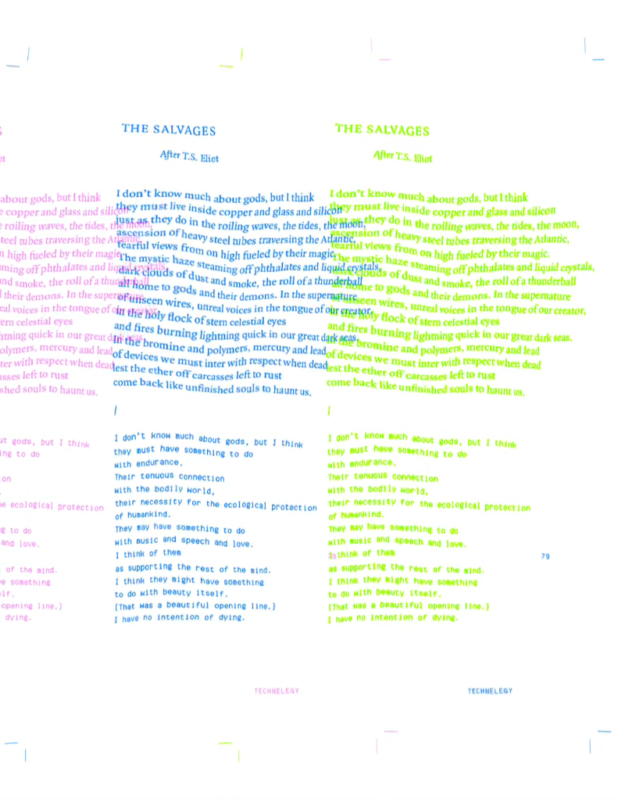

"The Salvages After T.S. Eliot"
Technelegy, 2021 · Poesia Generativa · ERC-721 Ethereum
R$ 300 (floor price atual) + R$ 1.300 (Tablet emoldurado)
The Salvages After T.S. Eliot é uma obra que une poesia humanista e processamento algorítmico para revisitar os versos de T.S. Eliot. A impressão RISO bidimensional une texto e imagem em uma composição que existe simultaneamente como objeto físico e registro digital — rara instância em que a materialidade de uma coleção de arte textual é preservada e verificada em blockchain.
Technelegy é um marco pioneiro da poesia algorítmica, situando Stiles como uma das vozes mais relevantes na intersecção entre linguagem humana, programação e emoção — um campo que se tornaria central na arte digital dos anos seguintes.
| Artista | Sasha Stiles |
| Coleção | Technelegy — 2021 |
| Mídia | Poesia Generativa / Impressão RISO |
| Blockchain | Ethereum (ERC-721) |
| Curadoria | TheVERSEverse |
| Procedência | Foundation App |